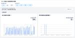

KAKEHASHI Tech Blog
https://kakehashi-dev.hatenablog.com/
カケハシのEngineer Teamによるブログです。
フィード

Next.jsのApp Routerを利用してフロントエンド開発を効率化した話 1
1
KAKEHASHI Tech Blog
カケハシでMusubi Insightの開発を行っている高田です。 以前、Angular のプロダクトを React（Next.js）にリプレイスしました！という記事を書きました。 本記事はその続きとなりますが、以前の記事はどちらかというとプロジェクト管理的な内容がメインだったので、今回は技術面を紹介できればと思います！ App Router の導入 今回の移行プロジェクトで技術選定を開始したのが 2023 年の 4 月頃です。 技術選定を行なったタイミングではまだ Pages Router が主流でしたが、ちょうど技術選定が終わる頃 Next.js のバージョンが 13.4 となり、App …
3日前
GitHub Actions に Python のパッケージインストーラー uv を導入する 11
KAKEHASHI Tech Blog
こんにちは。 カケハシの Musubi AI在庫管理 チームにて業務委託のエンジニアをさせていただいております takanakahiko と申します。 今回はuvをGitHub Actionsに導入したらとても効果があったので、紹介することができればと思います。 uvとは uvとはPythonのパッケージインストーラー・リゾルバーです。 その最大の特徴はRust言語で開発されており、従来のツールの100倍の速度で動作する点です。 pipやpip-toolsのdrop-in replacementが可能であることも特徴です。 開発をするのはAstralです。 AstralはRuffの開発で有名で…
6日前

fast-checkでProperty-based Testing導入してみた
KAKEHASHI Tech Blog
Musubi AI在庫管理のフロントエンドエンジニアの木本です。 Unitテストを書いていると、「この正常ケース/異常ケースの羅列で本当に品質を担保できているのか？」と不安になることがあります。そのとき有用な技術としてProperty-based Testingがあります。 TypeScriptでの代表的なProperty-based Testingフレームワークであるfast-checkを導入してみたところ、その結果として実装に不具合を発見することができたので、まとめたいと思います。 Property-based Testingとは？ 宣言された入力条件からランダムな入力を何パターンも生成し…
16日前
useContextについて調べてみた
KAKEHASHI Tech Blog
こんにちは、株式会社カケハシでおくすり連絡帳 Pocket Musubiの開発を担当している渡辺です。 以前はMusubiをはじめ各種プロダクトのフロントエンド部分をAngularで書いていたのですが、最近はもっぱらReact/Next.jsを扱うことが増えました。 現在、Reactのキャッチアップに励んでいる日々です。 最近、関わっているプロダクトのコードでuseContextというhooksが利用されているのをみて、興味を持ちました。 調べたことをブログの記事にしたいと思います。 かなり初心者向けの話になると思いますが、ご容赦ください。 Contextってなんだろう Contextは何かと…
22日前
チームで行っている輪読会の紹介
KAKEHASHI Tech Blog
はじめに こんにちは。カケハシの牧野です。 私が所属するチームでは数カ月間にわたり「ソフトウェアアーキテクチャの基礎」という書籍の輪読会をしておりました。この記事では輪読会を実施した背景や、実施して良かったことなどを紹介いたします。 輪読会のきっかけ 私のチームが開発するプロダクトはローンチから1年以上が経ちました。 私も含めローンチ時には在籍していなかったメンバーも増えたため、初期開発においてどういう方針で開発を進めていたのかの共有と、今後の方針について議論する機会がありました。 議論をする中で、初期開発で参考にしていた「進化的アーキテクチャ」の理解がメンバー間でばらつきがあったりと、共通の…
1ヶ月前
イベント駆動処理をメンテナンスモードにするためにやったこと
KAKEHASHI Tech Blog
はじめに こんにちは。AI在庫管理チームソフトウェアエンジニアの坂本です。 今回はこちらの記事で松本さんが紹介していたメンテナンスモードの中で、イベント駆動処理のメンテナンスモードを開発するためにやったことを少し詳しく紹介できればと思います。 松本さんの記事のアーキテクチャ図を拝借すると、今回の記事は以下の赤枠の話が中心になります。 AI 在庫管理のメンテナンスモードとは AI在庫管理のメンテナンスモードの主な目的は夜間のDBへのアクセスを止めて、長時間のDBのマイグレーションや再起動操作を実行することです。そのため、こちらで実行タイミングを制御することができないイベント駆動処理はメンテナンス…
1ヶ月前
安心してメンテナンスを行うためのメンテナンスモードの実現において考えたこと
KAKEHASHI Tech Blog
こんにちは、カケハシでAI在庫管理のプロダクトのバックエンドエンジニアをしている松本です。 AI在庫管理でメンテナンスを行うための機能としてメンテナンスモードを開発しました。本エントリではメンテナンスモードを実現する際に考えたこと、気をつけたことを書きたいと思います。このメンテナンスモードは他のメンバーとも協力して開発していますが、代表して本エントリを書いています。 また、メンテナンスモードの実現には、当然Webアプリの画面側の対応も必要ですが、今回はバックエンド側の対応を中心に紹介したいと思います。 本エントリの要約 さて、忙しい人のために本エントリの内容をまとめたものをここに記載しておきま…
1ヶ月前
テーブル駆動方式が与える開発インパクト
KAKEHASHI Tech Blog
コードを書くとき、テーブル駆動方式は過小評価されています。非常に強力なテクニックなので、事例とそのインパクトを説明します。 概略サンプル if age < 10: return price / 2 elif age < 20: return price / 3 elif age < 50: return price / 5 else: return price / 100 ↓ age_table = [ [10, 1.0/2], [20, 1.0/3], # 小数点扱い注意 [50, 1.0/5], [float('inf'),1.0/100] #番兵パターン ] for target in …
2ヶ月前
@apollo/clientの3.8.xへのアップデートに伴う挙動変更
KAKEHASHI Tech Blog
はじめに AI在庫管理のフロントエンド開発をしている木本です。 先日、@apollo/clientのv3.7.17からv3.8.1へのアップデートに伴う大規模なデグレが発生しました。具体的には無限スクロールで情報を取ってくる画面で、一切情報が見られなくなってしまう状態となりました。一次対応として@apollo/clientをv3.7.17に戻すことでデグレは解消されました。 この@apollo/clientアップデートについて、情報があまりネット上に広まっていないようなのでブログ記事として情報を残したいと思います。 TLDR @apollo/clientをv3.7をv3.8以降にアップデートし…
2ヶ月前
スポンサーとしてRSGT2024を盛り上げてきた
KAKEHASHI Tech Blog
こんにちは、カケハシのVPoEの湯前(id:yunon_phys)です。2024年1月10日から12日まで開催されたRegional Scrum Gathering Tokyo(RSGT)2024に、カケハシはゴールドスポンサーとして初参加しました。本エントリはスポンサーとして参加に至った経緯と当日の様子を書きます。 スポンサードはコミュニティへの還元のため カケハシはこれまでほぼ全てのプロダクト開発にスクラムを導入し、スクラムマスターの採用も積極的に行ってきました。現在も各開発チームでスプリントの成果を発表しあうohiromeという場を、取締役CTOの海老原がファシリテーションして隔週で行っ…
2ヶ月前
GitHubを使わずDatabricksだけでお手軽にライブラリ共有やCIができる環境を作ってみた
KAKEHASHI Tech Blog
こんにちは、株式会社カケハシのデータサイエンティストの保坂です。 データ分析をやっていると、典型的な処理、よく使う処理を再度使い回せるようにしたり、他のメンバーに共有したくなることはないでしょうか？さらにこのような処理を適宜みんなが自由に拡張でき、デグレがないようになっていたらどんなに良いことでしょう。 カケハシのデータサイエンティストはDatabricksを使って多くの分析業務を行っているので1、これがDatabricksの中だけで実現できれば、データサイエンティストにとってとても便利な環境になるのではないか？と考え、試行錯誤してみた結果、ごく簡単なものですがやりたいことを概ね実現できる環境…
2ヶ月前
RSGT2024に参加してきました
KAKEHASHI Tech Blog
カケハシがスポンサーブースを出すということで、Regional Scrum Gathering Tokyo 2024に現地参加する機会をいただきました。 今回は僕が参加にあたりスポンサーとして参加する自分の役割についての部分と、自分個人の目標や感じたことの両面を書いてみようと思います。 スポンサーとして参加する自分の役割について カケハシのスポンサーブースを盛り上げる できればオンラインも盛り上げる Day 2のスポンサーセッションの発表 自分個人の目標や感じたこと セッションで質問する OSTにテーマを出す とにかく色んな人と話す まとめ スポンサーとして参加する自分の役割について まずはス…
2ヶ月前
スクラムマスターはスクラムマスターを育成する
KAKEHASHI Tech Blog
はじめに 私はカケハシでエンジニアリングマネージャーをしている伊豆本です。約5年スクラムマスターを経験しています。 カケハシにはスクラムマスターが複数いるので、この記事で記載するのはあくまで私の持論です。 スクラムマスターでよくある課題感 自身がスクラムマスターをしている中で見聞きしたり経験した課題感には以下のようなケースがありました。 スクラムイベントに遅れて参加する 参加者が集まらずスクラムイベントを開始して良いかわからない スクラムイベントに無断で欠席 スクラムイベントがあると休みづらい スクラムイベントが予定していたタイムボックスに終わらない プロダクトバックログの完了の定義がない 外…
3ヶ月前
エンジニアリングマネジメントトライアングル再考
KAKEHASHI Tech Blog
この記事はカケハシPart1 Advent Calendar 2023の12/25分の記事になります。 カケハシPart2 Advent Calendar 2023もありますので、ご興味あれば読んで頂けたら幸いです。 はじめに こんにちは。カケハシCTOの海老原です。カケハシでは2022年から明確にエンジニアリングマネージャー制を敷きそれを前提に組織を構成していますが、そこに至るまで様々な紆余曲折を経たり、また設定後も隣接職種間でのいわゆるRole & Responsibilityに関する議論が多く行われてきました。今回は、この点について既存のフレームワークを援用しつつ私の考え方をまとめてみた…
3ヶ月前
入社1ヶ月で組織変更を任されて中止した話
KAKEHASHI Tech Blog
本エントリはカケハシ Advent Calendar 2023 Part 2の 25 日目の記事です。ぜひ Part1 と合わせて見て頂けたらと思います。 本日はMusubi AI在庫管理プロダクト開発チームでエンジニアリングマネージャーをしている僕が、開発ディレクターとして入社した当時に進めた組織変更への取り組みについて、現状の組織の状態も踏まえて振り返ってみようと思います。 組織変更の方針 入社した当時、Musubi AI在庫管理はフロントエンドチームとバックエンドチームに分かれて活動していました。 同じプロダクトを開発しているにもかかわらず、それぞれのチームは別々に活動している状態で同じ…
3ヶ月前
アーキテクチャの進化はドメインイベントが起点になる
KAKEHASHI Tech Blog
こちらの記事はカケハシ Advent Calendar 2023 Part2の24日目の記事になります。 adventar.org はじめに 反復的な開発は、変更容易性の高いソフトウェアが不可欠です。ソフトウェア開発の経験がある方なら、デリバリ後の洞察や市場環境の変化から、新しい機能の追加やアーキテクチャの進化の必要性に直面したことが一度はあるでしょう。 私自身、要求分析手法やSOLID原則等の技法を取り入れ、変更容易性に対応する多くのプロジェクトに参加しました。しかし、どれだけ優れた手法や技法を持っていても、変更が難しい要求が出てくることは避けられません。その際、「過去の出来事」を正確に記録…
3ヶ月前
他職種の人とコミュニケーションを取る時に気をつけていること
KAKEHASHI Tech Blog
こちらの記事は カケハシ Part 2 Advent Calendar 2023 の12月23日の記事になります。 カケハシ Part 1 Advent Calendar 2023もありますので興味のある方はそちらもお読みください。 はじめに こんにちは。10月の中日からカケハシでデータサイエンティストをしている川渕です。 入社してそろそろ2か月ほどになります。オンボーディングが大体終わり本格的な仕事が始まりつつあり、12月の頭くらいからMusubi AI在庫管理のアルゴリズムの一部を改善する仕事に取り組み始めました。 既存システムの一部を改善する仕事に取り組むので、関係者と上手くコミュニケー…
3ヶ月前
Musubi Insightの1年間の振り返り：ダッシュボードと患者リストの開発紹介
KAKEHASHI Tech Blog
カケハシPart1 Advent Calendar 2023の23日目の記事になります。 カケハシPart2 Advent Calendar 2023も読んでいただけたら嬉しいです。 はじめに 私はカケハシのMusubi Insightというサービスのエンジニアリングマネージャーをしている伊豆本です。 Musubi Insightはダッシュボードと患者リストという2つのプロダクトを開発しています。 ・ダッシュボード:薬局の経営者や現場の薬剤師が、日々の業務、収益、患者関係性を確認できるBIサービス ・患者リスト:薬局が患者の一覧を確認したり、患者を検索し、服薬期間中の患者をフォローするためのサ…
3ヶ月前
オフサイトミーティングでLLMのハッカソンをやってみた
KAKEHASHI Tech Blog
MusubiInsight のダッシュボードチームでは、四半期に一回ぐらいのペースでオフサイトミーティングを行なっています。今期は、そのオフサイトミーティングで LLM(大規模言語モデル)のハッカソンを行いました。 OpenAI が ChatGPT を発表してから、チームの中でも GitHub Copilot を導入したり ChatGPT を利用したりと、LLM を使ったツールを業務で活用するメンバーが増えてきていました。LLM を使った業務改善をプロダクトに活かせないか議論したいと言う話は以前からあったのですが、なかなか時間を取れていなかったこともあり今回のハッカソンを企画してみました。 今…
3ヶ月前
All TypeScriptのMonorepoのlinterをESLintからbiomeにしたらlintが25倍速くなった🚀
KAKEHASHI Tech Blog
フロントエンド(React.js TypeScript) バックエンド(Node.js TypeScript) インフラ(CDK TypeScript) の Monorepo の linter を ESLint からbiomeに変更したら lint が約50秒かかっていたのが大体2秒になって嬉しかったので共有します。 こんにちは、カケハシでソフトウェアエンジニアをしている加藤です。 本エントリはカケハシ Part 2 Advent Calendar 2023の 21 日目の記事です。 ぜひ Part1 も 2 も見て頂けたらと思います。 同じカケハシ社内の他のチームでは以前 コードフォーマッタ…
3ヶ月前
RDS Snapshot Exportを利用してDatabricksにデータ連携を行う
KAKEHASHI Tech Blog
こちらの記事はDatabricks Advent Calendar 2023の21日目の記事です。 こんにちは、カケハシのデータ基盤チームでデータエンジニアをしている伊藤と申します。 カケハシのプロダクト1ではRDS(Aurora MySQL/Aurora PostgreSQL)を利用しています。 全社的なデータ活用基盤のプラットフォームとしてDatabricksを採用し、Databricks上でRDSのデータを使用して分析したいという要望が社内で増えています。 そういった要望に応えるためにRDS Snapshot Exportを利用してDatabricksにデータ連携を行ったのでその紹介記事…
3ヶ月前
FlutterでDatadog RUMを利用する
KAKEHASHI Tech Blog
この記事は カケハシ Advent Calendar 2023 の20日目の投稿になります。 adventar.org はじめに こんにちは！カケハシでおくすり連絡帳 Pocket Musubi というサービスを開発している牧野です。 皆さんはモバイルアプリのモニタリングをしていますでしょうか？ 我々のチームではFlutterでモバイルアプリを開発しています。 モバイルアプリ開発においては、アプリの起動時間やCPU、メモリ使用量といったパフォーマンスのモニタリングや、画面遷移やタップといったユーザ行動の分析を行うため、何らかの監視・分析のツールを導入していることが多いのではないでしょうか。 こ…
3ヶ月前
データメッシュアーキテクチャの段階的な検討プロセスをご紹介します
KAKEHASHI Tech Blog
この記事は カケハシ Advent Calendar 2023 の19日目の投稿になります。 adventar.org 東 浩稔（あずま ひろとし）と申します。 私は、カケハシでデータプロダクトのPdM(プロダクトマネージャー)を務めております。 2023年の7月に入社し、全社のデータ利活用を促進するため、データプロダクトの整備・強化に取り組んでいます。 今回は、9月にDatabricks AI World Tour Tokyo 2023で発表した「データガバナンスの視点から見たデータメッシュアーキテクチャ」を元に 当社のデータメッシュアーキテクチャの詳しく掘り下げて解説いたします。 本書を読…
3ヶ月前
良いプロダクトづくりに必要なこと
KAKEHASHI Tech Blog
はじめまして。AI在庫管理の開発チームでバックエンドエンジニアをしている沖です。社内ではファーストネームで「たくおさん」と呼んでもらうことが多いです。まだ（もう？）入社して4か月ちょっとなのですが、もりもり開発ができていて楽しいです。 この記事は カケハシ Part 1 Advent Calendar 2023 19日目の記事です。 カケハシ Part 2 Advent Calendar 2023 と合わせて楽しんでいただけたら嬉しいです。 アドベントカレンダーの話が挙がった際にとりあえずノープランでエントリーして、本番環境のDBマイグレーションでやらかした懺悔文でも書こうかなと直前まで思って…
3ヶ月前
Airflow Zombie Task への対処法
KAKEHASHI Tech Blog
こんにちは。AI 在庫管理チーム ソフトウェアエンジニアの坂本です。 今回は AI 在庫管理のバッチ処理で利用しているワークフローツール Airflow (MWAA) の Zombie Task に苦労したケースとその対処法について紹介しようと思います。 概要 Airflow で動かしているバッチ処理が Zombie Task という事象によってエラーになってしまうことが高頻度で発生しました。 Airflow のタスクを適切に分離することで Zombie Task が発生してもバッチ処理が失敗することがないように変更を加えることができました。 Airflow の Zombie Task とは …
3ヶ月前
横断データサイエンス組織になったので共通的な分析プロセス・ルールを整備し始めました
KAKEHASHI Tech Blog
こちらの記事はカケハシ Advent Calendar 2023 Part2の17日目の記事になります。 はじめに こんにちは、株式会社カケハシのデータサイエンティストの保坂です。 2023年9月より、これまで2つに分かれていたデータサイエンス系メンバーの属するチームが合併し、医薬品サプライチェーン事業およびPatient Engagement事業を担うPharma Divisionにおける横断データサイエンス組織となりました。さまざまなバックグラウンドや経験を持った方が集まったそれなりの規模の組織になってきているので、組織が小規模だった頃と比べて分析プロセスに関する考え方の違いが課題となるこ…
3ヶ月前
VUCAと共にあるプロダクトバックログ
KAKEHASHI Tech Blog
はじめに こんにちは。カケハシでPatient Engagementという新規事業に関わるプロダクトマネジャー（以降PdM）を担当している渡部と申します。現在はこれらの事業を加速させるために、いわゆる0→1フェイズ、かつ、SoE(System of Engagement)の側面が強いプロダクト・サービスの企画開発をしております。 カケハシではスクラムでのアジャイル開発が共通して採用されていますが、前述のプロダクト特性上、お客様ごとに置かれている状況も考え方も異なる状況下であるべきを模索し続ける必要があります。いわゆるVUCAそのものなサービス開発に日々取り組んでいます。 そんな不確実性が高い状…
3ヶ月前
「価値」から小さく始めるドメイン駆動設計
KAKEHASHI Tech Blog
こちらの記事は カケハシ Advent Calendar 2023 の 16日目の記事になります。 概要 こんにちは。AI在庫管理の開発チームでSWEをしている小室です。 私は普段ドメイン駆動設計(以下、DDD)を意識しながら開発することが多く、実践を重ねるほどDDDの素晴らしさを実感しております。 最近異動してきたAI在庫管理の開発チームでは、現状はあまりDDDを意識して開発を進めていないのですが、プロダクトが対象としている世界が非常に複雑であることと、今まさに多くの法人様に利用していただけるようになったうれしい悲鳴として成長痛を感じ始めており、ドメイン駆動設計を何かのヒントとしてプロダクト…
3ヶ月前
カケハシ、採用広報はじめました
KAKEHASHI Tech Blog
はじめまして、カケハシで採用広報を担当している上野です。 今回、2023年の春から担当してきた採用広報専任としての取り組みをアドベントカレンダーとして公開するべく、筆を執ることになりました。よろしければ、お付き合いいただけたらと思います。 「カケハシ」を知ってもらうべく、採用広報チームを立ち上げ まずは、簡単に自己紹介をさせてください。わたしは、2021年の4月にカケハシにジョインしました。当時は、2年ほどエンジニアリクルーター兼HRBPというかたちで、採用に従事。入社当初の課題は、カケハシという会社を候補者がなかなか知らないことでした。 というのも、Tech Blogや自社採用サイトなどが当…
3ヶ月前
Mutation Testing でテストケースの品質を高める
KAKEHASHI Tech Blog
テストの範囲や深さをどこまでカバーするべきかは開発者にとって常に難しい課題です。完全なテストを書くことは困難であり、バランスを見つけることが求められます。 この記事では、テストケースの品質を担保する手法としてMutation Testingを紹介します。 Advent Calendarもやってるので読んでみていただけると嬉しいです。 カケハシ Part 1 Advent Calendar 2023 カケハシ Part 2 Advent Calendar 2023 Mutation Testingとは Mutation Testingは、Fuzzing Testの1つで、コード内にミュータントと…
3ヶ月前